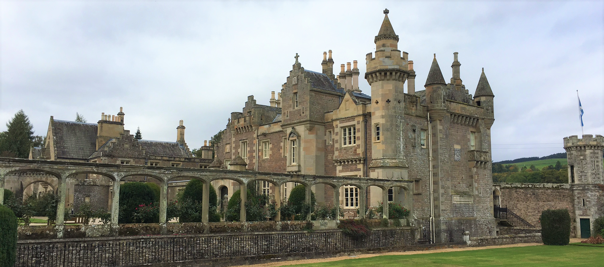

Scottish Borders
Edinburgh & Melrose, Scotland - September 25, 2017
On Saturday I went on my first excursion with Arcadia. The excursion covered the Scottish borders - specifically Sir Walter Scott's house, Scott's View, Melrose Abbey, and Rosslyn Chapel. On the way to Abbotsford (Sir Walter Scott's house), the tour guide explained Scotland's complex history from the 1400s to when Sir Walter Scott began writing in the early 1800s. I remembered much of the information about who ruled and what they were known for because of my AP Euro and Early European History classes, but a cool tidbit of knowledge was that Scott was alive around the time of Napoleon, and he along with many others would go souvenir hunting after one of Napoleon’s battles while there were still people dying from their wounds. Kind of gruesome but that was the 1800s.
Scott was definitely a hoarder (the guide tactfully said "magpie" to give a less negative connotation). He had thousands of military and historical artifacts in his castle-esque home that covered his walls and were prominently displayed in small viewing cabinets. There was a chair in his study that was made from the wood of the house in which William Wallace, a Scottish knight who was the main leader during the War of Scottish Independence in the 13th century and who was known for his portrayal in the movie Braveheart, was betrayed. Other fascinating items in his collection are a lock of Bonnie Prince Charlie's hair (probably from his wig) and the cross that Mary Queen of Scots had when she was executed for treason.
Our next stop was Scott's view. It was named after Sir Walter Scott because it was his favorite place to visit and think. It was up a windy, one-lane road and the location looked over acres of farm land and many herds of sheep. Legend has it that when Sir Walter Scott died, the horses that were bringing him to his final resting place went on autopilot and traveled instead to Scott's View, allowing Scott one last look at his favorite spot before he was buried. For us tourists, it was a great spot for some photos of the landscape.
After a quick lunch in the tiny town of Melrose, we ventured into the ruins of Melrose Abbey. Melrose Abbey, like many of the Scottish abbeys, has been ruined for quite some time, but instead of it being due to Oliver Cromwell trying to get rid of the Catholicism in Scotland in the 1500s, it was actually due to King Henry VIII. King Henry VIII destroyed many Catholic abbeys in Scotland once he decided to split from the Catholic church in order to divorce his first wife. Melrose was one of the abbeys he targeted because it was so close to England. A neat fact about Melrose is that it houses the mummified heart of Robert the Bruce, who died in the 14th century.
Finally, our last stop was Rosslyn Chapel. Rosslyn Chapel is actually quite close to Edinburgh. It is famous for being a location in The Da Vinci Code, and that fame has given the chapel enough money to finish restorations on its amazing architecture and sculptures. We were told before going inside that there was a black and white cat that lives inside the church named William, but we were flabbergasted when we walked into the chapel and saw a large cat lounging on one of the pews. William apparently enjoys the attention he receives from Rosslyn's visitors, and we all had a laugh when he casually walked to the front altar during a talk by one of the tour guides of the chapel and started playing with the altar's tassels. On a more architectural note, Rosslyn chapel has lots of amazing sculptures of biblical references, exotic flora and fauna, and of little green men (who are apparently there to promote fertility). The chapel, although completely gray on the inside, used to be a pinky red color (it is made of sandstone) however in the 1950s the restoration efforts decided to put a cement/plaster mixture on to the walls to protect it from the elements, turning the inside of the chapel gray.
Although it was a long day of sightseeing, I really enjoyed visiting the Scottish borders and learning more about its complex history.
Cheers!
- Caileigh Marshall